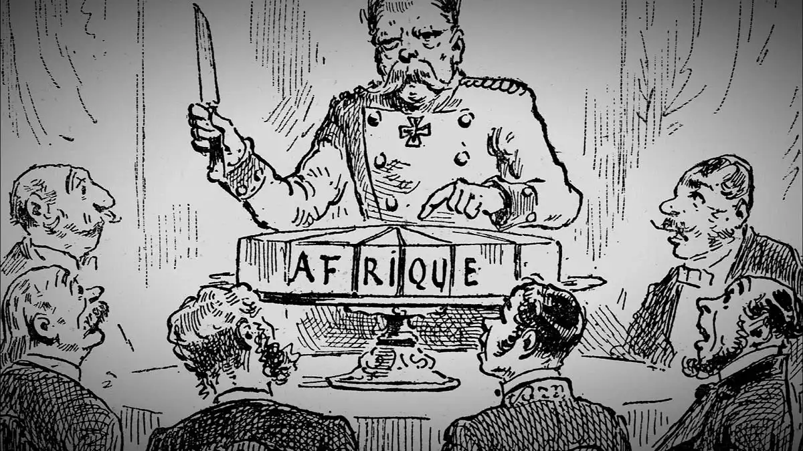
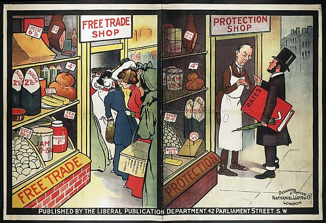
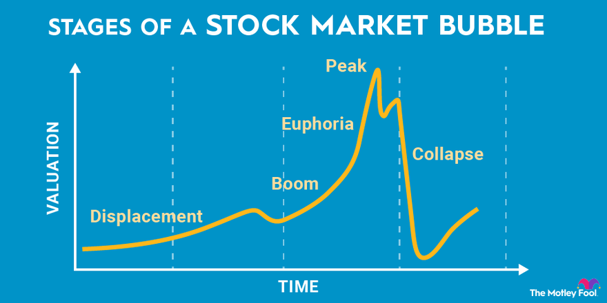

The economic aftermath of World War I acted as a catalyst for one of the most significant financial crises in history: the 1929 Stock Market Crash
World War I shattered the economic foundations of Europe. The immense costs of the war drained national treasuries, leading to unprecedented levels of debt. Germany, in particular, found itself saddled with crushing reparations imposed by the Treaty of Versailles.
The war also disrupted global trade and commerce. The interwar period witnessed a retreat from globalization as countries turned inward, implementing protectionist policies and erecting trade barriers.
The collapse of empires, such as the Austro-Hungarian and Ottoman Empires, and the rise of new ideologies, including communism and fascism, further destabilized the economic landscape.
While the U.S. emerged from the war relatively unscathed, its role as a creditor nation exposed it to the economic vulnerabilities of its trading partners.
The excesses of the Roaring Twenties, characterized by speculative fervor and rampant consumerism, masked underlying economic weaknesses. Many Americans invested heavily in the stock market, fueled by easy credit and a culture of optimism.
In conclusion, the economic effects of World War I served as a turning point that precipitated the 1929 Stock Market Crash and the subsequent Great Depression. The war's legacy of debt, disruption, and disillusionment cast a long shadow over the global economy